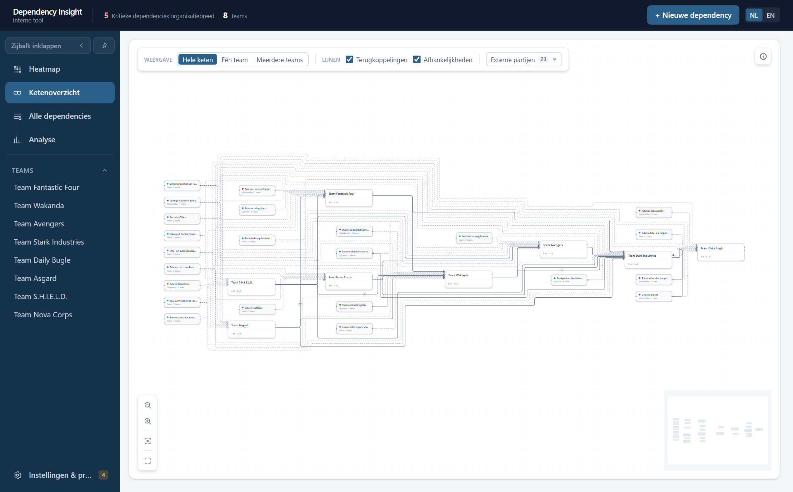
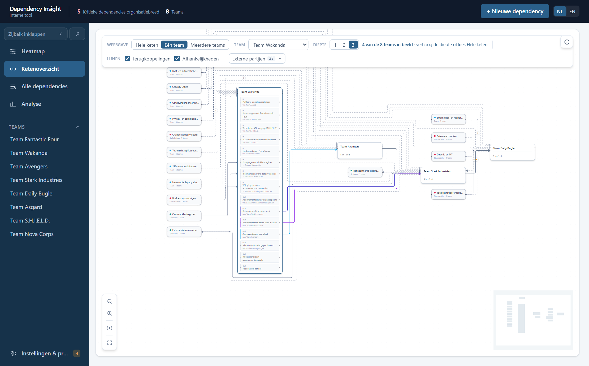
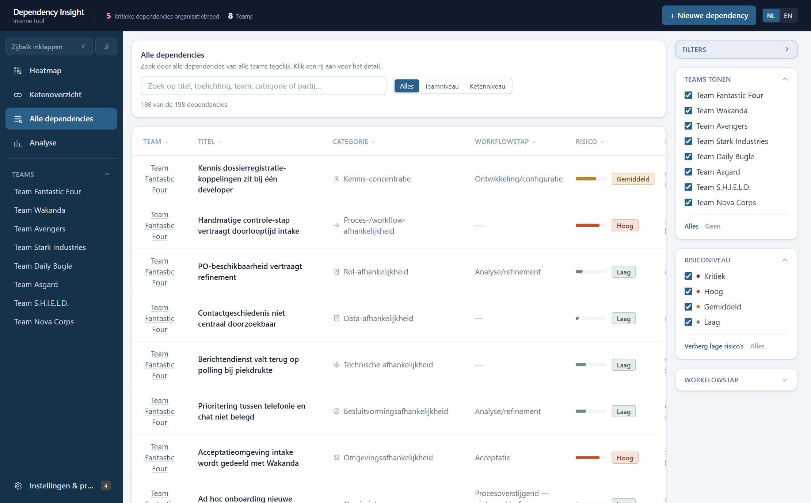
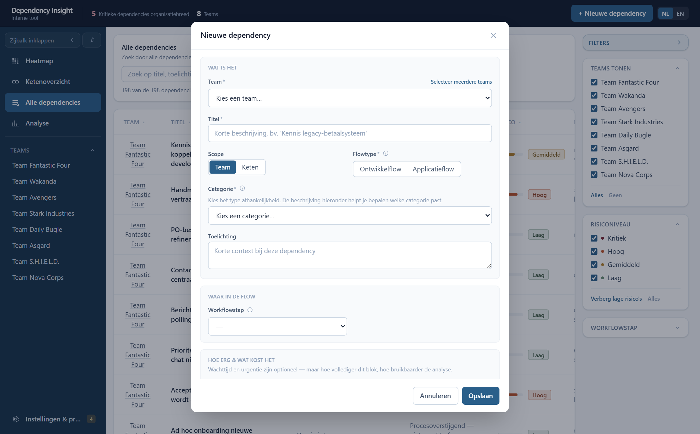
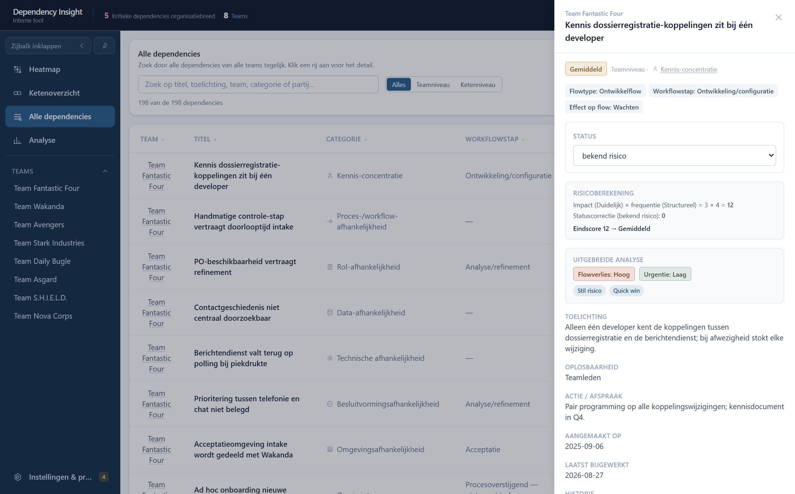
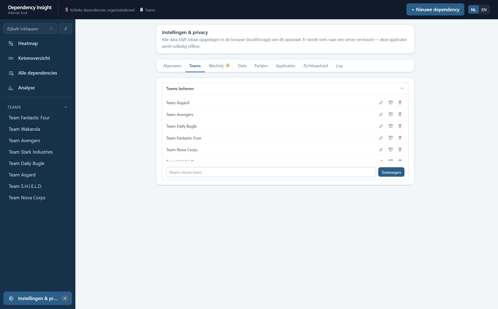
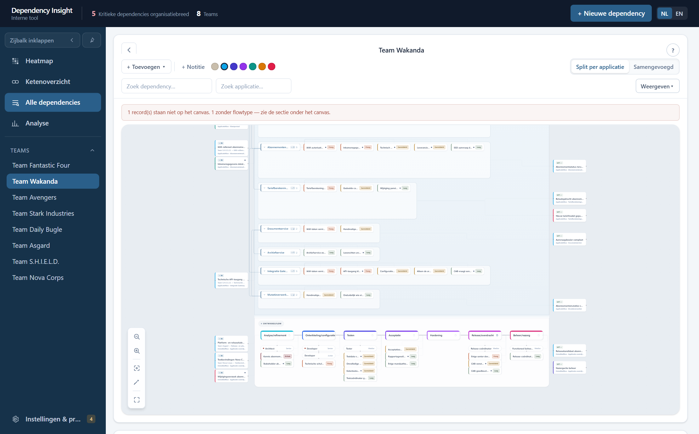
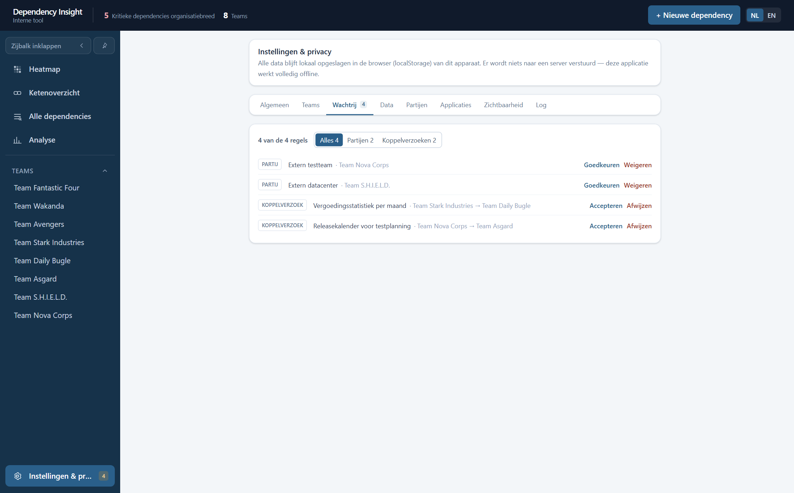
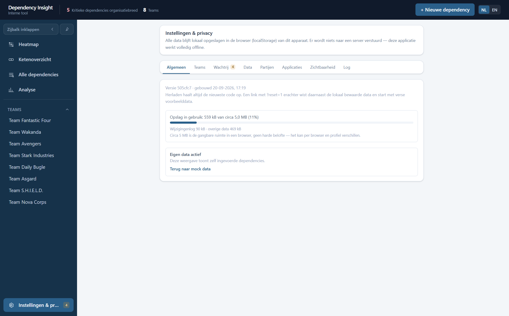
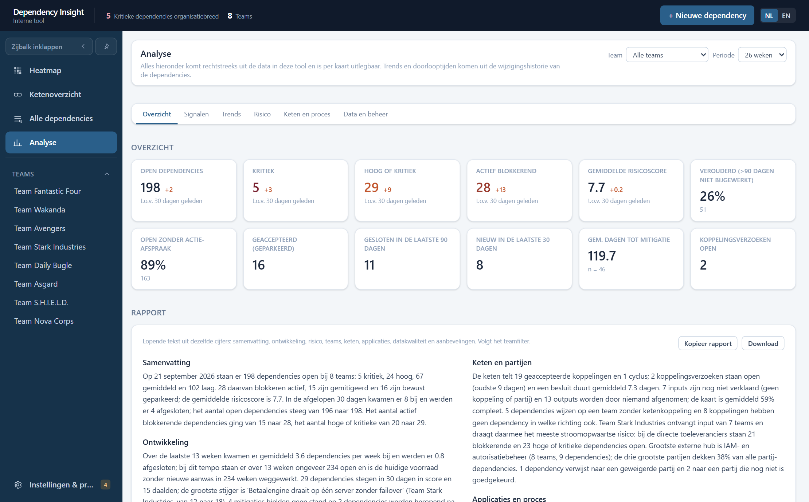

GEBRUIKSHANDLEIDING
Dependency Insight
Overzicht per functionaliteit: dependencies in kaart brengen, teamworkflows visualiseren en de keten tussen teams doorzien.
100% lokaalAlle data blijft in je browser. Niets wordt naar een server verstuurd.
Geen persoonsgegevensAlleen rollen en teamniveau-informatie, nooit namen.
TransparantElke risicoscore is uit te leggen — nooit een black box.
Versie september 2026 · Nederlands / English
1Basisnavigatie
Elk scherm heeft dezelfde omlijsting: een zijbalk links en een koptekst bovenaan.

Het startscherm bij een eerste bezoek, met de blauwe melding over voorbeelddata.
- Zijbalk — bovenaan vier weergaven: Heatmap, Ketenoverzicht, Alle dependencies en Analyse. Daaronder de teamlijst waarmee je naar een teampagina gaat. Onderaan Instellingen & privacy; het gele getal daarnaast is het aantal regels dat op beoordeling wacht (hoofdstuk 10).
- Met de twee knoppen bovenin de zijbalk klap je hem in tot iconen, of zet je hem vast zodat hij niet meer automatisch wegschuift.
- Koptekst — het aantal kritieke dependencies over de hele organisatie, het aantal teams, de knop + Nieuwe dependency (hoofdstuk 5) en de taalknoppen NL / EN voor de hele applicatie.
- Elke pagina heeft een eigen adres —
/heatmap, /ketenoverzicht, /dependencies, /analyse, /instellingen en /team/…. Verversen, terug en vooruit in de browser, en het delen van een link komen op dezelfde pagina uit.
- Voorbeelddata — wie de tool voor het eerst opent, ziet acht verzonnen teams en een blauwe balk die dat zegt. De balk verdwijnt vanzelf zodra je zelf iets wijzigt; met Beginnen met eigen gegevens wis je de demo in één keer.
Let op: zolang die blauwe balk in beeld staat, dekt hij de bovenste regel van de werkbalk gedeeltelijk af. Scroll een klein stukje, of begin met eigen gegevens.
2Heatmap
Het startscherm: teams tegen categorieën, in één beeld. Handig om te zien waar risico zich ophoopt.
- Elke rij is een team, elke kolom een categorie. Het getal in een cel is het aantal open dependencies; de kleur is het hoogste risico daarbinnen. Een lege cel betekent: geen dependencies in die combinatie — geen foutstatus.
- Beweeg over een cel voor de verdeling over de risiconiveaus; de rest van de tabel dimt zodat de cel eruit springt. Hetzelfde geldt voor een hele rij of kolom via de kop.
- Klik op een cel, een teamnaam of een kolomkop voor de bijbehorende dependencies in een tabel eronder. Klik daarin een regel aan voor het volledige detailpaneel (hoofdstuk 6), of op een teamnaam om naar die teampagina te gaan. Escape of "Wis selectie" sluit de tabel weer.
- Bovenaan staan een zoekveld en de keuze Alles / Teamniveau / Ketenniveau, waarmee je de weergave beperkt tot interne of externe dependencies.
- Rechts filter je op team, risiconiveau (met een snelknop "Verberg lage risico's") en workflowstap. Gearchiveerde teams staan standaard uit maar blijven aan te vinken.
- Geaccepteerde (bewust afgehandelde) dependencies tellen hier niet mee — die blijven wel staan op de teampagina.
- Toon categorie-uitleg onderaan klapt de lijst met categorie-iconen open.
3Ketenoverzicht
Toont hoe teams elkaars werk als input en output doorgeven — de "keten" achter de dependencies.

Hele keten: elk team ingeklapt, met de externe partijen eromheen.
- Linksboven kies je de weergave: Hele keten (elk team ingeklapt, in ketenvolgorde, met de externe partijen erbij — dit zie je bij het openen), Eén team of Meerdere teams. Elke stand heeft een eigen adres, dus een link deelt precies wat jij ziet.
- Bij Eén team kies je een focusteam in de dropdown ernaast. Met Diepte (1, 2 of 3) bepaal je hoeveel ketenstappen er vanaf dat team in beeld komen; ernaast staat hoeveel van de teams daarmee zichtbaar zijn.
- Onder Lijnen zet je Terugkoppelingen (koppelingen terug naar een eerder team) en Afhankelijkheden (de gestippelde lijnen) aan of uit. Onder Externe partijen kies je met een zoekveld welke partijen als kaartje meedoen.
- Rechtsboven zit de legenda (i-knop) met alle lijnsoorten. Linksonder de knoppen voor zoomen, passend maken en volledig scherm; rechtsonder een klein overzichtskaartje van de hele tekening.
- De indeling wordt volledig berekend — kaarten zijn niet versleepbaar — en lijnen lopen om de kaarten heen, nooit erdoorheen.
- Gekleurde lijnen zijn koppelingen op itemniveau en lopen door tot op het input- of outputblokje zelf. Een grijze lijn met een teller bundelt alle koppelingen tussen twee ingeklapte teams; een amberkleurig puntje op die teller betekent dat er nog minstens één verzoek op akkoord wacht.
- Klik op een kaart om die uit te klappen, of op een lijn om de onderliggende koppelingen te zien. Klik op één input- of outputblokje om zijn stroom door de keten te volgen; de rest van de tekening dimt. Hetzelfde werkt voor een externe partij.
- Een lijn tussen een output- en een inputblokje is een expliciete koppeling, gelegd op de teampagina (hoofdstuk 10) — nooit automatisch geraden. Losse, nog niet gekoppelde blokjes zijn normaal en geen foutstatus.

Eén team: het focusteam staat uitgeklapt met al zijn in- en uitgaande items.
4Alle dependencies
Eén doorzoekbare lijst van alle dependencies van alle teams tegelijk — handig als je wél weet wát je zoekt, maar niet meer bij welk team het stond.

- Het zoekveld kijkt naar titel, toelichting, teamnaam, categorie en betrokken partij tegelijk.
- Daarnaast de keuze Alles / Teamniveau / Ketenniveau, en eronder een teller ("198 van de 198 dependencies") zodat altijd zichtbaar is hoeveel er wegvalt door je filters.
- Klik op een kolomkop om te sorteren, op een regel voor het detailpaneel (hoofdstuk 6), of op een teamnaam om naar die teampagina te gaan.
- Rechts staat hetzelfde teamfilter als op de heatmap.
5Een dependency toevoegen of bewerken
Hetzelfde formulier voor aanmaken en bewerken, bereikbaar via "+ Nieuwe dependency" of vanuit een detailpaneel.

Het formulier staat in vier blokken. Een sterretje betekent verplicht.
| Blok | Velden |
|---|
| Wat is het |
Team* — of klik "Selecteer meerdere teams": dan wordt per team een eigen, apart te beheren kopie aangemaakt.
Titel* — korte omschrijving.
Scope — Team of Keten. Dit bepaalt welke categorielijst je krijgt: acht interne of twaalf externe categorieën. De lijst ligt vast; eigen categorieën toevoegen kan niet.
Flowtype* — Ontwikkelflow (speelt in het ontwikkelproces) of Applicatieflow (gaat over draaiende applicaties, koppelingen of datastromen).
Categorie* — met een korte uitleg per keuze.
Toelichting — optionele vrije tekst. |
| Waar in de flow |
Workflowstap — verplicht bij Ontwikkelflow: waar in de flow merk je deze afhankelijkheid? De dependency verschijnt daarna vanzelf bij die fase op de teampagina. Bij Applicatieflow is dit veld niet van toepassing; daar label je op de teampagina met een applicatie. |
| Hoe erg & wat kost het |
Impact*, Frequentie* en Status* bepalen samen de risicoscore (hoofdstuk 6).
Wachttijd en Urgentie / deadline zijn optioneel — maar hoe voller dit blok, hoe bruikbaarder de analyse. |
| Wat doen we ermee |
Oplosbaarheid — op welk niveau is dit op te lossen (teamlid, meerdere teams, organisatorisch …).
Actie / afspraak en Mitigatie — optionele vrije tekst. |
6Het detailpaneel en de risicoscore
Klik een dependency aan — waar dan ook in de tool — en het paneel schuift rechts open.

- Bovenaan het risiconiveau, het team, de scope en de categorie, met chips voor flowtype, workflowstap en effect op de flow.
- De status pas je direct in het paneel aan, zonder het formulier te openen.
- Risicoberekening — altijd voluit uitgeschreven: impact × frequentie + statuscorrectie, met de gebruikte waarden en de eindscore erbij. Nooit een black box.
- Uitgebreide analyse — afgeleide labels zoals flowverlies, urgentie, "stil risico" en "quick win". Dit blok kan in Instellingen uitgezet worden.
- Daaronder de ingevulde tekstvelden, de aanmaak- en wijzigingsdatum, en de historie: wie wat wanneer veranderde.
- Onderin: Bewerken, Dupliceren, Afsluiten of Heropenen, en Verwijderen.
7Een team aanmaken en beheren
Teams beheer je op één plek: Instellingen & privacy → tabblad Teams.

- Klik onderin de zijbalk op Instellingen & privacy.
- Open het tabblad Teams.
- Typ de naam in het veld "Naam nieuw team" en klik Toevoegen. Het team verschijnt meteen in de zijbalk, met een lege teampagina.
- Hernoemen, archiveren of verwijderen kan in dezelfde lijst, en ook rechtstreeks in de zijbalk: beweeg over een teamnaam en er verschijnen drie kleine knopjes.
- Archiveren haalt het team uit de heatmap, het ketenoverzicht en de analyse, maar de dependencies blijven bestaan en blijven meetellen in de totalen. Dit is de veilige keuze voor een team dat is opgeheven.
- Verwijderen kan alleen als er niets meer aan hangt. Heeft het team nog dependencies of ketenkoppelingen, dan meldt de tool dat en biedt archiveren aan — zo verdwijnen er nooit stilzwijgend gegevens van anderen.
8Teampagina — het canvas
Klik een team in de zijbalk en je krijgt de werkstroom van dat team als tekening. Rechtsboven zit een ? die een korte rondleiding start.

- Het canvas heeft drie zones. Links komen de inputs binnen, rechts vertrekken de outputs. Daartussen staat bovenaan de applicatieflow — één baan per applicatie die het team beheert — en onderaan de ontwikkelflow: de vaste fasereeks van Analyse/refinement tot Beheer/nazorg.
- Dependencies verschijnen automatisch als gekleurde chip bij hun applicatie of bij hun workflowstap; capaciteit verschijnt als badge bij de fase waaraan de rol gekoppeld is.
- Past een record niet op het canvas — bijvoorbeeld omdat het flowtype nog ontbreekt — dan staat er een melding boven het canvas en vind je het record in de sectie eronder. Er verdwijnt dus nooit iets uit beeld zonder dat het gezegd wordt.
- + Toevoegen opent een kort formuliertje voor een applicatie, een verbinding tussen twee applicaties, input, output of een rol.
- Met Split per applicatie / Samengevoegd kies je of input- en outputitems op de hoogte van hun eigen applicatiebaan staan of gebundeld in het midden. De eerste stand voorkomt dat lijnen over andere banen heen lopen.
- De twee zoekvelden lichten een dependency of applicatie op het canvas op. Onder Weergeven zet je onderdelen van de tekening aan of uit.
- Linksonder de knoppen voor zoomen, passend maken en volledig scherm.
- Onder het canvas staan twee tabbladen: Dependencies van dit team (met tellers voor actief, geaccepteerd en gesloten, en een eigen filtermenu) en Teamgegevens (hoofdstuk 9).
9Teampagina — teamgegevens
Vijf uitklapbare blokken die vastleggen wat het team beheert en hoe werk in- en uitstroomt. Alles wat je hier invult, tekent het canvas en het ketenoverzicht.
- Applicaties — welke systemen dit team draaiende houdt of ontwikkelt. Elke applicatie krijgt een eigen baan op het canvas.
- Applicatieverbindingen — welke applicaties gegevens met elkaar uitwisselen, met een korte vragenlijst per verbinding.
- Input — hoe werk binnenkomt. Optioneel met een bron (team, rol, persoon, systeem, omgeving of stakeholder), die het blokje op het canvas kleurt, en optioneel gekoppeld aan de output van een ander team (hoofdstuk 10).
- Output — wat het team oplevert, op dezelfde manier te koppelen.
- Capaciteit — wie er in het team zit en wat er gebeurt als die wegvalt: rol (vrij in te typen, bijvoorbeeld "Senior tester"), aantal, senioriteit (junior, medior of senior), optioneel een fase, en risico bij wegvallen met een toelichtingsveld voor de reden.
Geen namen. Capaciteit gaat over rollen en aantallen, niet over personen. De analyse groepeert op fase, senioriteit, aantal en uitvalrisico — een naam voegt daar niets aan toe en hoort niet in deze tool.
10Een koppeling tussen twee teams
Dit is het enige moment waarop twee teams op elkaar moeten wachten. Een koppeling wordt nooit geraden: het ontvangende team moet er zelf ja op zeggen.

De wachtrij in Instellingen: nieuwe externe partijen en koppelverzoeken, elk met goedkeuren of weigeren.
- Team A opent op zijn teampagina een input of output en kiest bij Gekoppeld aan het andere team en het bijbehorende item. Bestaat dat item daar nog niet, dan kies je "+ Nieuw item voorstellen bij …".
- Bij het item van team A staat vanaf dat moment "Wacht op akkoord van …". Zolang dat er staat telt de koppeling nog niet als ketenkoppeling.
- Team B ziet het verzoek op twee plekken: in het blok Koppelingsverzoeken op zijn eigen teampagina, en in Instellingen → Wachtrij. Het getal naast "Instellingen & privacy" in de zijbalk telt hoeveel er openstaan.
- Team B klikt Accepteren of Afwijzen. Na accepteren verschijnt de koppeling in de lijst van beide teams en als lijn in het ketenoverzicht.
Waarom deze stap? Accepteren voorkomt dubbele registratie: het item staat daarna één keer geregistreerd in plaats van bij elk team apart. En het voorkomt dat team A in de kaart zet wat team B volgens zichzelf helemaal niet levert.
In dezelfde wachtrij staan ook nieuw voorgestelde externe partijen. Die werken hetzelfde: iemand stelt een partij voor tijdens het invullen, een beheerder keurt goed of weigert. Zo blijft de partijenlijst schoon in plaats van dat dezelfde leverancier onder vijf schrijfwijzen ontstaat.
11Aantekeningen op het canvas
Vrije aantekeningen bovenop de vaste werkstroom, voor context die niet in een veld past.
- + Notitie in de werkbalk van de teampagina zet een gekleurd tekstvak op het canvas, direct te bewerken.
- De kleur kies je met de rondjes ernaast — dezelfde kleuren als de bron-codering bij input-items (hoofdstuk 9), zodat aantekeningen en input dezelfde beeldtaal spreken.
- Een notitie is te verslepen. Verwijderen gaat met het ✕-knopje dat verschijnt als je de notitie aanwijst.
Eén soort aantekening. Er is bewust geen tekengereedschap voor rechthoeken, cirkels, ruiten of losse verbindingslijnen. De structuur van de tekening komt uit de gegevens; een notitie is voor wat daar níet in past.
12Instellingen & privacy
Een eigen pagina (/instellingen), bereikbaar onderaan de zijbalk, met acht tabbladen.

Alle data blijft lokaal in de browser van dit apparaat. Er wordt niets naar een server verstuurd; de applicatie werkt volledig offline.
| Tabblad | Wat je er doet |
|---|
| Algemeen | Welke versie draait en wanneer die gebouwd is, hoeveel opslag in gebruik is (van de circa 5 MB die een browser geeft), en of je naar voorbeelddata kijkt. Een link met ?reset=1 erachter wist de lokale data en start met verse voorbeelddata. |
| Teams | Teams toevoegen, hernoemen, archiveren en verwijderen (hoofdstuk 7). |
| Wachtrij | Openstaande koppelverzoeken en voorgestelde externe partijen goedkeuren of weigeren (hoofdstuk 10). |
| Data | Exporteren als afbeelding (PNG) of als JSON, importeren uit JSON, logregels ouder dan een jaar archiveren, een teampagina leegmaken, en alles wissen. De JSON-export is de volledige back-up en de manier om je werk aan een collega over te dragen. |
| Partijen | Het register van externe partijen: hernoemen, samenvoegen, op vervallen zetten. |
| Applicaties | Het centrale applicatieregister: alle applicaties van alle teams in één lijst, met het aantal teams dat er gebruik van maakt. |
| Zichtbaarheid | Pagina's en losse onderdelen aan- of uitzetten voor de hele tool. |
| Log | Het wijzigingslogboek: wat er wanneer veranderd is. |
De laatste vier tabbladen zijn beheerderstabbladen en vragen eenmalig om een wachtwoord. Dat is geen beveiliging — alles staat immers lokaal — maar een drempel tegen per ongeluk wijzigen.
Over de PNG-knop: die legt vast wat er op dat moment als weergave open staat. Omdat Instellingen zelf een pagina is, levert de knop nu een afbeelding van de instellingenpagina op. Wil je een heatmap of ketenoverzicht als plaatje, gebruik dan voorlopig een schermafdruk van je besturingssysteem.
Wis alle data verwijdert alles definitief, met een bevestigingsstap. Maak eerst een JSON-export als je nog iets wilt kunnen terughalen — er is geen andere weg terug.
13Analyse
Eén pagina die alles uit de data haalt wat erin zit: metrieken, trends, constateringen en hygiënecontroles. Bewust zo volledig mogelijk — schrap wat je niet gebruikt.

- Filters bovenaan: een team (alles wordt dan tot dat team teruggebracht, inclusief keten en applicaties) en de periode van de trendgrafieken (13, 26 of 52 weken). De filters gelden voor alle tabbladen tegelijk.
- Zes tabbladen: Overzicht, Signalen, Trends, Risico, Keten en proces, en Data en beheer. Alleen het geopende tabblad wordt getoond.
- Overzicht — kerncijfers met het verschil ten opzichte van 30 dagen geleden: open, kritiek, blokkerend, gemiddelde score, verouderd, zonder actie-afspraak, gesloten, nieuw, dagen tot mitigatie en open koppelingsverzoeken.
- Rapport — dezelfde cijfers als lopende tekst, in secties van samenvatting tot aanbevelingen. "Kopieer rapport" zet de tekst op het klembord; "Download" bewaart hem als markdown-bestand met het team en de datum in de naam, klaar om in een wiki te plakken.
- Waarschuwingen — één zin per geval (dependency, verzoek, applicatie, team of partij), gesorteerd op ernst; klik opent het detail of de teampagina.
- Constateringen — regels die afgaan op de data: harde deadline zonder afspraak, lang blokkerend, stille risico's, hub-partijen, oude verzoeken, kennisconcentratie, mitigaties die geen stand hielden, groeiende voorraad, wederzijdse afhankelijkheid. Met ernst hoog, midden of laag, en uitklapbaar naar de onderliggende records.
- Trends — per week teruggerekend uit de wijzigingshistorie: open per status en per risiconiveau, nieuw tegenover gesloten, de som van alle scores, verslechterd en verbeterd in 30 dagen, een projectie en de statusovergangen.
- Risico en urgentie — kwadranten (quick win, opschalen, opruimen, accepteren), stille risico's, deadlines, gemitigeerd-maar-hoog, acuut en chronisch, dekking van actie-afspraken, top 15.
- Keten en proces — verdelingen en hotspots, externe partijen als hub, wie blokkeert wie, kennisconcentratie, teamscorekaart, cycli, losse items, ketenrisico stroomop- en -afwaarts, applicaties als single point of failure, en applicaties die door meerdere teams gebruikt worden. Daarnaast belasting per werkstap tegenover capaciteit, flowverlies en doorlooptijden.
- Data en beheer — hygiënecontroles op dependencies, input/output en applicaties; registratie per week en per team; de review-wachtrij; laatste activiteit per team en dubbele registraties.
- Elke kaart heeft een regel uitleg: welke velden en welke formule. Klik op een dependency voor het detail, op een team om naar de teampagina te gaan.
ABijlage — git in het kort
Deze bijlage is voor wie de tool beheert, niet voor wie hem gebruikt. Hij legt in gewone taal uit wat er gebeurt als de code wordt bijgewerkt.
De begrippen
- Repository (repo) — de projectmap met alle bestanden én de volledige geschiedenis ervan. Die geschiedenis zit in een verborgen mapje
.git in het project zelf.
- Commit — een opgeslagen momentopname van je wijzigingen, met een regel uitleg erbij. Elke commit is terug te vinden en terug te draaien. Je maakt er liefst één per afgeronde verandering, niet één per dag.
- Branch (tak) — een aparte lijn om aan te werken, zodat de hoofdlijn ongemoeid blijft tot je klaar bent. De hoofdlijn heet hier
main.
- Remote — dezelfde repo, maar dan op een server. Voor dit project is dat GitHub:
Quintensevinga/dependency-tool.
- Push / pull — je commits naar de server sturen (push) of die van een ander ophalen (pull). Zonder push staat je werk alleen op je eigen laptop.
De gang van zaken bij dit project
- Haal eerst op wat er al is:
git pull.
- Werk aan de code. Kijk met
git status wat er gewijzigd is.
- Sla je werk op:
git add . gevolgd door git commit -m "korte uitleg".
- Stuur het naar GitHub:
git push.
Wat er daarna vanzelf gebeurt
- GitHub draait een controle op elke push: de code wordt gebouwd, de stijlcontrole en de tests draaien. Mislukt er iets, dan krijg je een mail.
- De CHANGELOG.md wordt automatisch bijgewerkt met de commits van die push. Die hoef je dus nooit met de hand bij te werken.
- De nieuwe versie wordt automatisch gepubliceerd op
https://dependency-tool.vercel.app/. Een paar minuten later ziet iedereen die het adres opent de nieuwe versie.
Met zijn tweeën aan hetzelfde project
Aan dit project wordt om de beurt gewerkt, niet tegelijk: de één doet een blok werk af en pusht, daarna is de ander aan de beurt. Dat scheelt het samenvoegen van twee versies van hetzelfde bestand, wat de meest voorkomende bron van gedoe is. Begin je beurt daarom altijd met git pull.
Kwijtraken kan bijna niet. Alles wat ooit gecommit en gepusht is, staat op GitHub en is terug te halen — ook als je lokaal iets weggooit. Wat je níet hebt gecommit, bestaat alleen op je eigen laptop. Bij twijfel: committen.